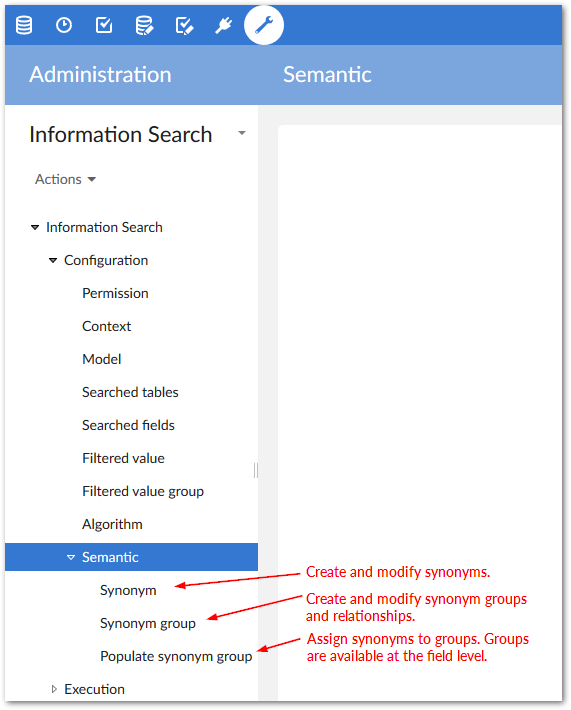
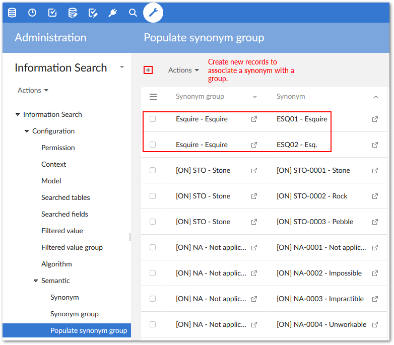
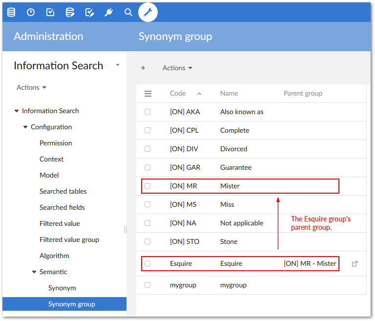
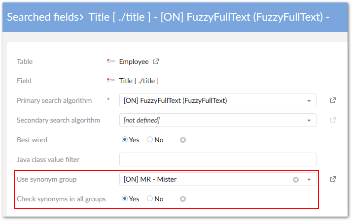
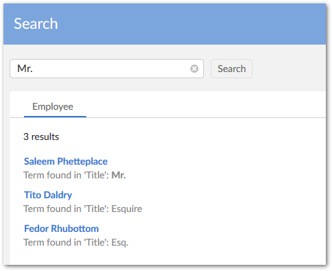

You can create and modify groups of synonyms to increase search flexibility. If the add-on does not find a match on the initial search value, it turns to the values contained in the synonym group to find a possible match. Of course, depending on business requirements, you need not limit this functionality to literal synonyms. For example, you could group common abbreviations.
The following image highlights the semantic group where you can work with synonyms.

To create synonyms and add them to groups:
Navigate to Administration > Data quality & analytics > EBX® Information Search Add-on > Configuration > Semantic.
Create synonyms in the Synonym table.
Create a Synonym group to organize your synonyms.
Use the Populate synonym group table to assign synonyms to groups by adding each desire synonym.

Optionally, create a relationship between synonym groups. When enabling search, you can specify that the add-on check for matches in related groups. As shown below, use the Synonym group table to create the relationships.

Be sure to save after completing your changes.
You can enable synonym search from a Searched field configuration as follows:
In the Searched fields table, select a synonym group from the drop-down menu of the Use synonym group property.
Select a synonym group from the Use synonym group drop-down menu.
Use the Synonyms processing mode to tell the add-on how to evaluate search terms against configured synonyms. The available options are:
Use synonyms for the entire value of the attribute: This option compares synonyms with the entire word or phrase being searched. Take fore example the following group of synonyms: "Mr", "Mister", and "Sir". Taken as a whole, the search phrase "Mr. Bob Smith" may not match close enough to trigger results. However, if the search term was "Sir", it could return the record for "Sir Bob Smith".
Use synonyms for every word of the attribute: This option compares synonyms with each part of a phrase being searched. Using the above example, the search phrase "Mr. Bob Smith" could return "Sir Bob Smith" as a result.

Activate the Check synonyms in all groups property (Optional). When enabled, the add-on looks for matching synonyms in related groups.
In the configuration example shown below, we created an Esquire group and associated it with the add-on's default [ON] MR group. When searching for Mr., the returned results include the synonyms defined in each group.
